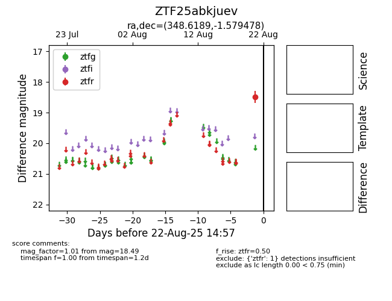

Target ZTF25abkjuev at 2025-08-22 15:41, see:
FINK: fink-portal.org/ZTF25abkjuev
Lasair: lasair-ztf.lsst.ac.uk/objects/ZTF25abkjuev
ALeRCE: alerce.online/object/ZTF25abkjuev
alt names
ZTF25abkjuev (ztf,alerce)
coordinates:
equatorial (ra, dec) = (348.6189,-1.57948)
galactic (l, b) = (76.5509,-55.46475)
photometry
last ztfr=18.49
1 ztfr detections
